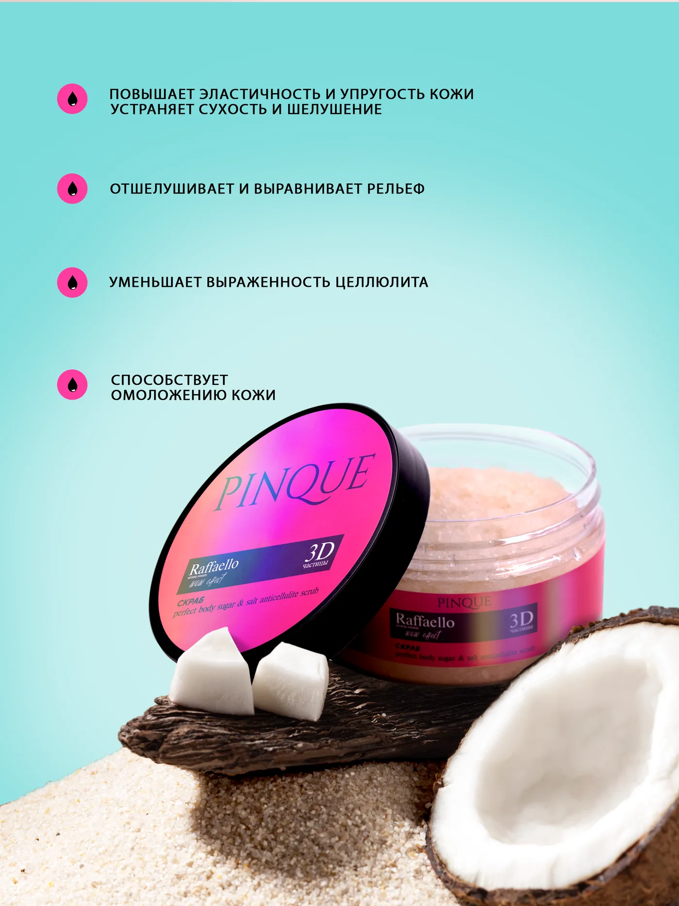
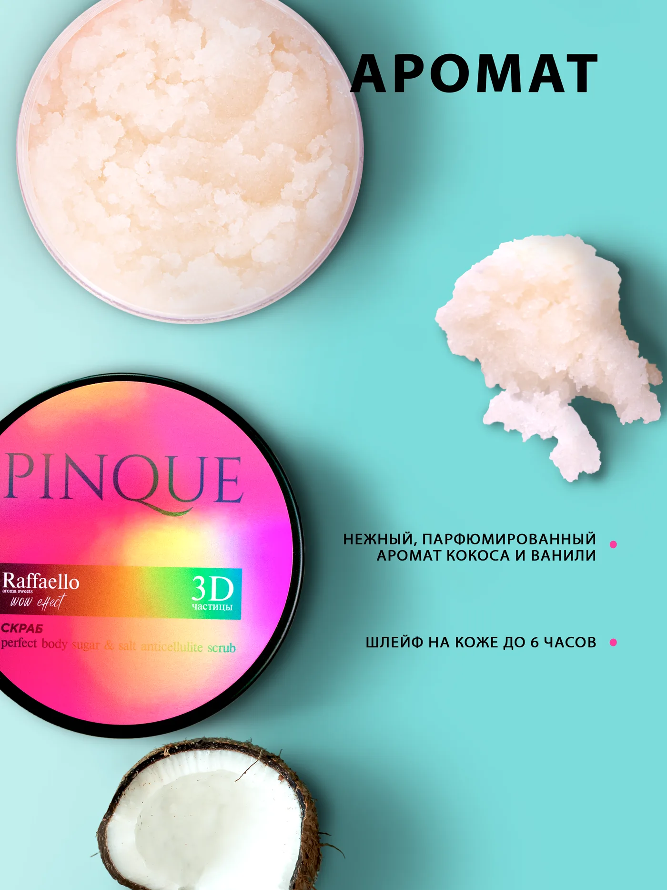
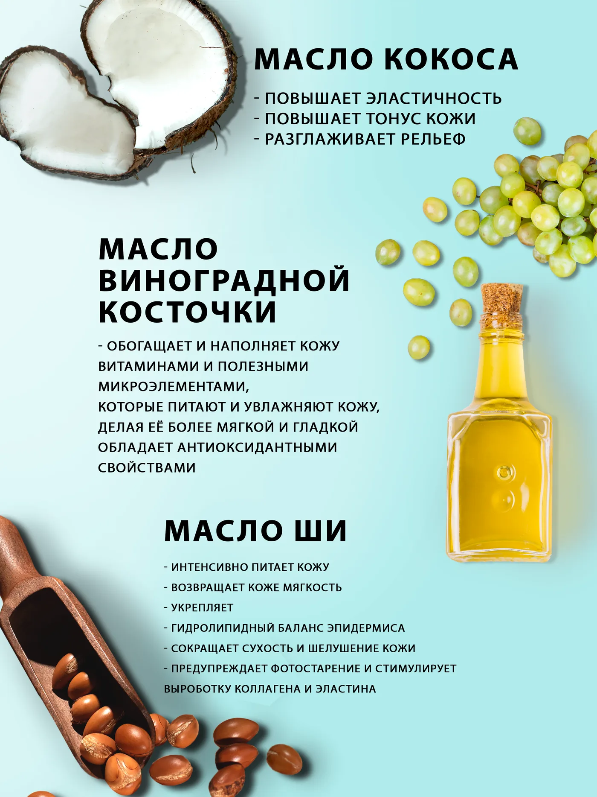
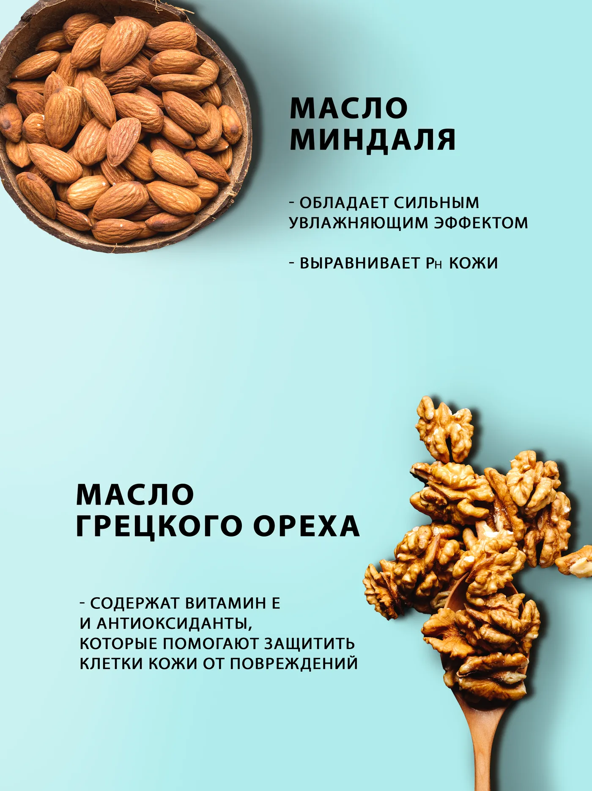

Pinque · 2024
Pinque
Серия карточек для линейки сахарного скраба Pinque: яркая обложка, продуктовые офферы и слайды с ингредиентами в единой визуальной системе.
Pinque выбран как первый сквозной пример новой структуры: один реальный проект проходит путь от контентного entry до автогенерируемых страниц раздела, подраздела и отдельного кейса.
В кейсе собрана одна согласованная серия карточек для маркетплейса. Визуальный язык строится на контрастной палитре, крупной типографике и аппетитной продуктовой подаче, чтобы карточка читалась как брендовая система, а не как разрозненный набор слайдов.

Слайды кейса
В этом примере кейс собирает web-ассеты из `media/web/entries/pinque/`, а сами пути в шаблоне не захардкожены по файлам страницы.



